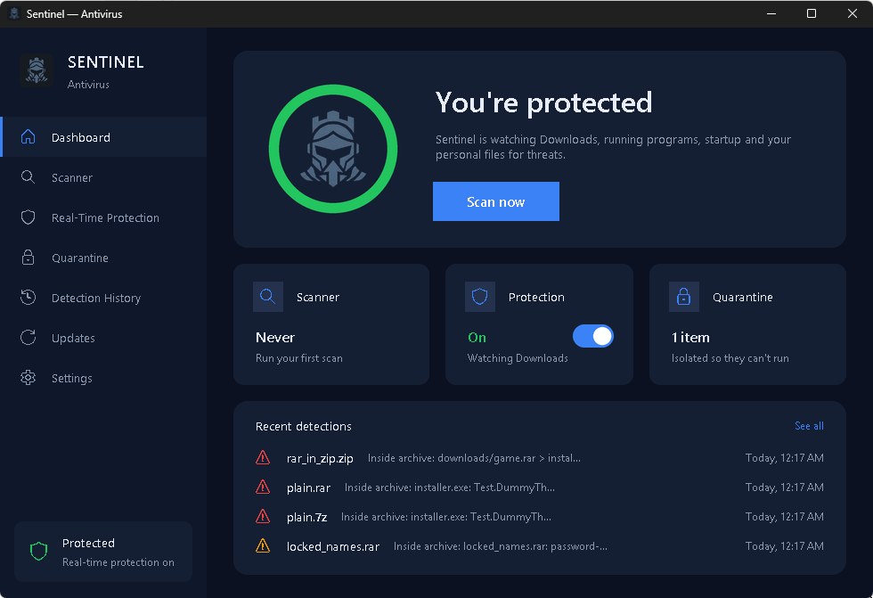
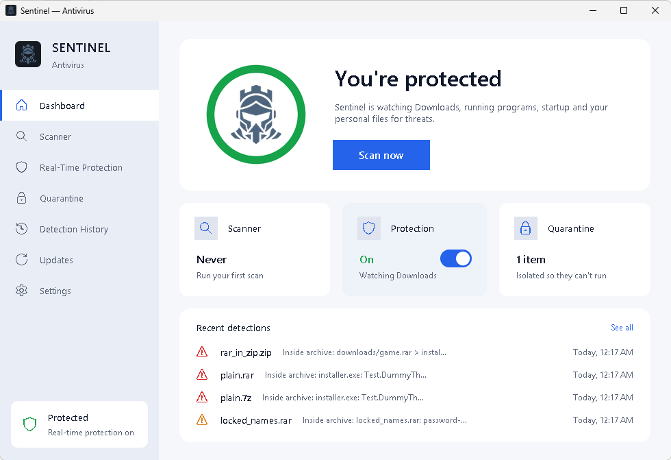

An antivirus,
built from scratch.
Sentinel checks files against 1.15 million known-malware fingerprints and 10,700 YARA rules, looks inside archives, and keeps a background agent watching your downloads, programs, startup entries and personal folders — even after you close the window. Got a sketchy message? Ask Sentinel checks it with an AI that runs on your own PC. And there's a free VPN and a firewall control panel built in.
Follow a file through the scanner.
Every file goes through the same layers, strongest first. The first hard match stops the line. Weak signals get one last check: a valid publisher signature, verified by Windows itself, clears them. Scan one folder or every drive on the PC, and stop any time.
Fingerprints
SHA-256 against 1.15M samples from MalwareBazaar and ThreatFox.
YARA rules
10,700 rules from YARA Forge that recognise whole malware families.
Archives
ZIP, 7z, RAR, TAR, CAB and ISO, two levels deep, bomb-safe.
Heuristics
Encoded PowerShell, injection APIs, fake extensions, obfuscation.
Signature
Authenticode check with Windows' own WinVerifyTrust.
Not sure about a message? Ask.
Paste a text, an email or a link. Built-in checks look it up instantly, then an AI that runs on your own PC explains it in plain words. No account, no API key.
- Checks first, AI secondEvery link is looked up in 390,000+ known phishing domains plus the live URLhaus and OpenPhish lists, and checked for fake brand sites like paypa1-secure.com. The AI gets those results as facts, so it doesn't guess.
- Nothing leaves your PCThe AI runs locally with llama.cpp. What you paste is never sent anywhere, and it works offline.
- Catches the classicsGift-card requests, "free Robux", fake delivery texts, fake tech support, requests for passwords or codes, and pressure to act right now.
- Answers in your languageEnglish, 简体中文, हिन्दी, Español or Français, whichever Sentinel is set to.
A free VPN, one switch.
Sentinel VPN runs on Proton VPN's free, no-logs servers through WireGuard, the open-source VPN engine. Set it up once and the switch just works.
- Two minutes to set upMake a free Proton account, download a WireGuard config, and import it. Sentinel installs WireGuard for you, but only after checking it's really signed by WireGuard LLC.
- One admin prompt, everWindows asks once to create the VPN. After that, turning it on and off needs no prompts.
- Turns itself on for open Wi-FiJoin a network with no password (a café, an airport, a hotel) and the VPN switches on by itself, with a note saying why. Trust a network once and it's left alone there.
- No leaksWhile connected, WireGuard blocks any traffic that tries to go around the tunnel. The config's private key is stored where only Windows can read it.
Your firewall, without the maze.
A clear control panel for the Windows Firewall that's already on your PC. It's a real kernel-level filter, just without the 400-rule settings window.
- Standard or LockdownStandard blocks incoming connections. Lockdown cuts every connection in and out with one click, for when you think something's wrong.
- Block any appEvery app on your PC is listed with its icon and a Block button, blocked ones on top. Search it, or Browse for anything else. Unblock any time.
- Blocks the real app, not just the shortcutApps like Discord start through a small launcher and run the real program from a version folder. Sentinel blocks both, offers to close the app so connections it already has are cut, and flags it with UPDATED if an update moves it somewhere new.
- Nothing hiddenEvery rule Sentinel adds is labeled "Sentinel Antivirus" in Windows' own firewall settings, and uninstalling removes them all.
More protection, quietly.
Three things that work in the background once you set them up: blocking bad websites everywhere, keeping your other apps patched, and scanning on a schedule.
Web protection
One switch blocks scam, phishing and malware sites in every browser and app, by filtering website lookups through Quad9 (or Cloudflare for Families). Turning it off puts your settings back exactly as they were.
Update your other apps
Out-of-date apps are one of the most common ways into a PC. Sentinel lists every app with a newer version and updates it in one click, using Windows' own package manager.
3.13.7 → 3.13.15
9.0.1 → 9.0.2UPDATED
3.0.20 → 3.0.21
Scheduled scans
Pick daily or weekly and a time. The background protection quietly scans Downloads, Desktop and Documents at low priority, and catches up on a missed scan when you next sign in.
One number for how safe you are.
Sentinel scores your PC out of 100: its own protection, Windows Firewall, Defender, web protection, whether your apps are patched, and more. Anything missing comes first, with a Fix button.
Try it right here. See if a password has shown up in a known data breach.
Your password never leaves your browser: it's hashed (SHA-1) on your device and only the first 5 characters of the hash are sent to Have I Been Pwned. Nothing is stored. The same check is in the app.
Calm when it's quiet.
Loud when it matters.


Updates itself
The Updates tab pulls the newest release from GitHub, checks its SHA-256 against the one GitHub publishes, and installs it. Settings are kept.
Dark, light, or Windows
Switches instantly, including the popups and the window's title bar. "Match Windows" follows the system setting as it changes.
Nothing happens without you
Sentinel never ends a program or deletes a file on its own. Every action is a button you press.
Five watchers.
One background agent.
Protection runs as its own process, so closing or quitting the window doesn't stop it. If it was on when the PC shut down, it's back at the next sign-in.
Download protection
New files in your Downloads folder are scanned the moment they finish downloading — including everything inside archives.
Program protection
Each new program is checked within about a second of starting, and everything already running gets a background sweep. Verdicts are cached, so it costs about 0.3% of one CPU core.
Startup protection
Alerts when something adds itself to the Run keys, a Startup folder or Task Scheduler. Programs signed by Microsoft are logged quietly — except launchers like PowerShell and rundll32, which malware loves to hide behind.
Ransomware protection
Watches Documents, Desktop, Pictures, Music, Videos and Downloads for files suddenly turning into unreadable data, then names the program writing the most to disk right now.
USB drive protection
Plug in a USB drive or SD card and Sentinel scans it straight away in the background. Threats get the usual popup; a clean drive gets a quick all-clear. Or have it ask first.
Speaks your language.
Starts in your Windows display language and switches live — popups, tray menu, activity log, installer and uninstaller included. Dates and numbers follow local formats.
What it can't do.
Sentinel is a portfolio project, not a replacement for Microsoft Defender. Keep Defender on. Here's exactly where the edges are.
No blocking before launch
That takes a Windows kernel driver. Sentinel detects and responds within about a second instead.
Brand-new malware can slip by
If no fingerprint, rule or heuristic covers it yet, it won't be caught. That's true of every antivirus; this one has fewer layers.
Ransomware is caught after it starts
It triggers after about ten files are affected, and the "likely cause" is a best guess from disk activity.
The AI can be wrong
Ask Sentinel is a small AI running on a home PC. The built-in checks are facts; the AI's explanation is a helper. When in doubt, don't click.
Admin actions need your OK
Sentinel never stays elevated. Ending a program that runs as administrator shows the Windows admin prompt first, every time.
Two minutes,
no admin rights.
- Download SentinelSetup.exeFrom the latest GitHub release. Its SHA-256 is listed in the release notes.
- Get past SmartScreenThe installer isn't code-signed yet, so Windows warns you. Click More info → Run anyway.
- Pick a language and optionsDesktop shortcut, start with Windows. It installs for your account only.
- Turn on protectionThe first time, Sentinel downloads its threat database (about 50 MB). After that it updates itself every 6 hours.
# Python 3.11+ git clone https://github.com/willischilling/sentinel-antivirus cd sentinel-antivirus pip install -r requirements.txt python gui.py # there's a CLI too python cli.py scan %USERPROFILE%\Downloads